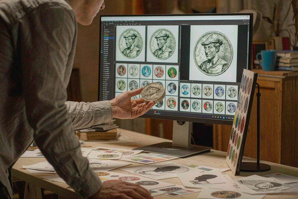
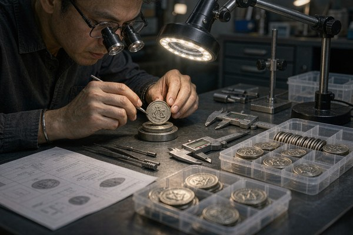

Factory vs Broker vs Reseller: Who Are You Actually Paying?
The fastest way to misunderstand a quote is to assume everyone selling coins makes them. They do not, and the three models behave very differently once you hand over a deposit.
A factory owns the tooling, the presses, the plating line, and the people who run them. When you order from a factory, your file goes to a die that gets cut for you, your coins get struck on that floor, and the person answering your email can walk to the machine. That proximity is why factories can usually quote tighter, answer spec questions directly, and turn a reorder around without re-explaining the design.
A broker takes your order and sends it to a factory — often one they do not name. They add a margin for the trouble, and in return they may give you cleaner communication, easier payment, or local accountability. None of that is dishonest by itself. The danger is only when a broker presents itself as the maker, because then you are two steps from the people who actually control quality and timeline, and a problem has to travel through someone who cannot see the production floor.
A reseller is a step further removed. They may be selling a generic stock coin with your artwork applied, or white-labeling another maker's run. For certain simple needs that is fine, but it is not custom manufacturing, and it should not be priced like it.
How do you tell which one you are talking to? Ask the three questions a real factory answers without blinking: do you own the stamping presses, where is production physically done, and who owns the tooling die after I pay? A factory names the building. A broker hedges with "our facility" and cannot show it. That single exchange tells you more than any brochure.
Proof Turnaround, Revision Policy, and Who Owns the Artwork
The proof stage is where a supplier's real capacity shows, and it is also where ownership quietly gets decided if you are not paying attention.

Turnaround. A same-day or next-day digital proof is a healthy signal: the shop has in-house design and is motivated to earn the order. Proofs that take several business days are not automatically worse, but they preview where design sits in that shop's queue — and a slow proof is usually a slow production timeline in disguise. Our breakdown of what drives coin pricing assumes a responsive partner; a shop that stalls on the proof will stall later too.
Revision policy. Ask before you approve: are revisions included, or is each round billed? A maker confident in its design team typically bundles a reasonable number of revisions, because getting the proof right protects both sides. A shop that meters every tweak is either understaffed or padding the line.
Artwork ownership. This is the one buyers forget and regret. Your vector files and the tooling reference are your property. A reputable supplier confirms that in writing and hands the files over on request. Be wary of any maker who implies the artwork is theirs to withhold — that posture turns a routine reorder into a negotiation you never needed. Get ownership stated on the quote, not assumed in your head.
Material and Plating Specs You Should Demand in Writing
"Gold-plated challenge coin" is a sentence, not a specification, and the gap between those two is where disappointment lives. The fix is boring and non-negotiable: write the specs down.
At minimum, put these on the quote or order confirmation:
- Base metal — zinc alloy, brass, or copper. They feel and age differently, and they are not priced the same.
- Plating type and thickness — "gold plating" with no micron figure can mean a thin flash layer that wears through in months. The number is what protects you.
- Enamel type — soft or hard, because they finish and wear differently and the price reflects it.
- Edge style — rope, chain, reeded, or smooth, so the coin in your hand matches the coin in your head.
A supplier who resists putting numbers on paper is telling you something. Vague specs are easy to meet any way the shop finds convenient, and convenience is rarely what you approved. If you want the full inspection framework for when the boxes arrive, the same discipline applies at the door — the points in our coin quality checklist are the ones worth writing into the order in the first place.
Red Flags in Quotes, Photos, and 'Reviews'
No single warning sign proves bad faith. The pattern does, and most disappointed first-time buyers saw the pattern and talked themselves past it.
In the quote: no itemized tooling line, a price dramatically below every other bid with the difference unexplained, shipping or "handling" fees that surface only after you approve, and any pressure to pay the full deposit within a day or two. A deposit is normal — committing to tooling and materials before you see finished coins is real risk on their side — but the structure should be clear, not urgent.

In the photos: stock imagery that any company could use, inconsistent lighting across a "portfolio," and proofs shown for someone else's design rather than yours. A maker who has done the work can show your file moving through their process. One who cannot is showing you a mood board.
In the reviews: a wall of identical five-star ratings with no detail, a sudden burst of reviews over a few weeks, or praise that could describe any product. More useful than star counts are specific reviews naming the order size, the timeline, and a problem that got resolved — those are hard to fabricate. Treat reviews as one input, never as proof.
A Short Vetting Checklist You Can Run in 20 Minutes
You do not need a procurement department to avoid the common traps. Run through these 12 questions before you pay a deposit — most bad fits reveal themselves by question six.
- Do you own the stamping presses, or do you forward to a factory?
- Where is production physically located, and can you show the floor?
- Who owns the die and the artwork files after I pay — and will you send them on request?
- What is your digital proof turnaround, and are revisions included?
- What is the base metal, plating type, and plating thickness in microns?
- Is the enamel soft or hard, and which edge style is standard?
- Is tooling itemized separately, or buried in the unit price?
- At what quantity, if any, is the mold fee waived? (See our guide to challenge coin mold fees.)
- What is the real minimum order, and how does no-minimum production actually work at your shop?
- What does the deposit cover, and what is the cancel policy before production starts?
- How long is the die stored, and from what date does that clock run?
- Can you name three references with orders of a similar size and timeline to mine?
None of these are hostile. A maker who does this for a living answers them in one email and appreciates that you know the difference between a factory and a front. The ones who stall, redirect, or get vague are the answer — you just asked the right question to hear it.
Ready to Work With a Maker, Not a Middleman?
We own our tooling, show our process, and put specs in writing before a deposit is due. Get a free digital proof in 12 hours and a quote you can read line by line.
Get Free QuoteFrequently Asked Questions
How do I know if a challenge coin supplier is a real factory?
Ask three direct questions: do you own the stamping presses, where is production physically done, and who owns the tooling die after payment. A real factory answers all three without hesitation and can show you the production floor. A broker or reseller will hedge, redirect, or give vague answers about "our facility" that they cannot actually name or show.
Is it better to use a factory-direct manufacturer or a local broker?
Neither is automatically better. A factory-direct maker usually offers lower per-piece cost, direct control over specs, and faster answers on tooling and reorders. A local broker can offer clearer communication, easier payments, and local accountability, but you pay a margin for it and you are one step removed from the people who actually make the coin. Choose based on which trade-off fits your order and your risk tolerance.
Who should own the artwork and die files?
You should. Your artwork and the tooling reference are your property, and a reputable supplier will confirm that in writing and hand over vector files on request. Be wary of any maker who implies the files are theirs to withhold, because that turns a routine reorder into a negotiation you did not need.
What plating and material specs should I demand in writing?
At minimum, get the base metal (zinc alloy, brass, or copper), the plating type and thickness in microns, the enamel type (soft or hard), and the edge style written into the quote or order confirmation. Vague terms like "gold plating" without a thickness figure can mean a thin flash layer that wears through in months, so the number is what protects you.
What are the red flags in challenge coin quotes?
Watch for a quote with no itemized tooling line, a price that is dramatically lower than every other bid with the difference unexplained, shipping or "handling" fees that appear only after you approve, and any pressure to pay the full deposit within a day or two. None of these is proof of bad faith on its own, but together they are the pattern that precedes most disappointed first-time buyers.
How long should a digital proof take?
A same-day or next-day digital proof is a healthy signal that a supplier has in-house design capacity and is motivated to earn the order. Proofs that take several business days are not automatically worse, but they do tell you where design sits in that shop's priority queue, and a slow proof is usually a preview of a slow production timeline.
Are online reviews of coin companies reliable?
Treat them as one input, not proof. A wall of identical five-star reviews with no detail, a sudden burst of reviews over a few weeks, or praise that could apply to any product are all signs of padded listings. More useful than star counts are specific reviews that mention the order size, the timeline, and a problem that was resolved — those are hard to fake.
What deposit should I expect to pay?
A deposit is normal, because the supplier commits to tooling and materials before you see finished coins. What matters more than the exact figure is the structure: a clear split between deposit and balance, a written statement of what the deposit covers, and a policy for what happens to it if you cancel before production. If a supplier cannot explain the deposit in writing, that is the answer that matters.